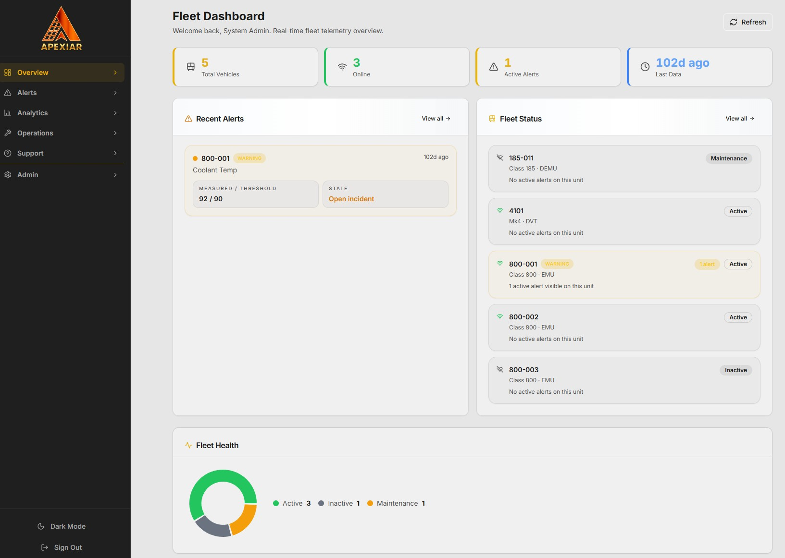
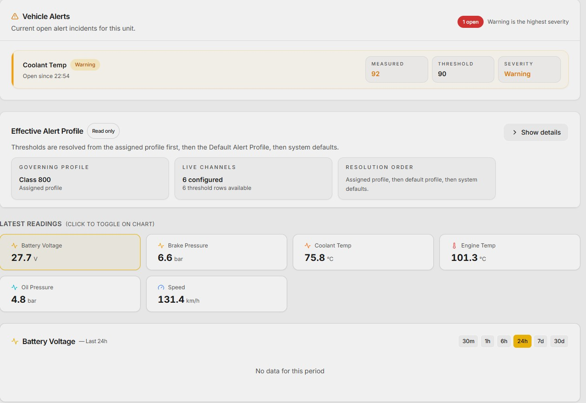
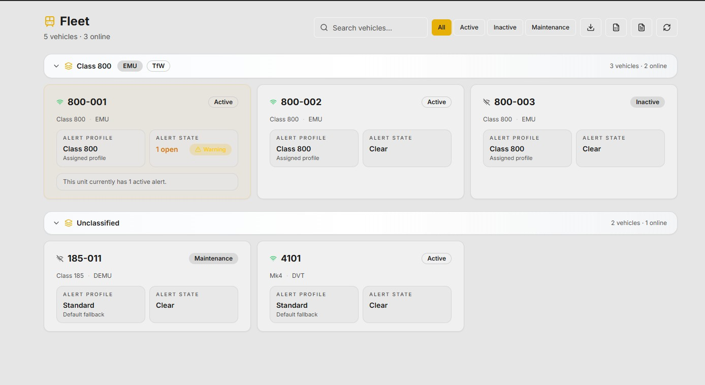
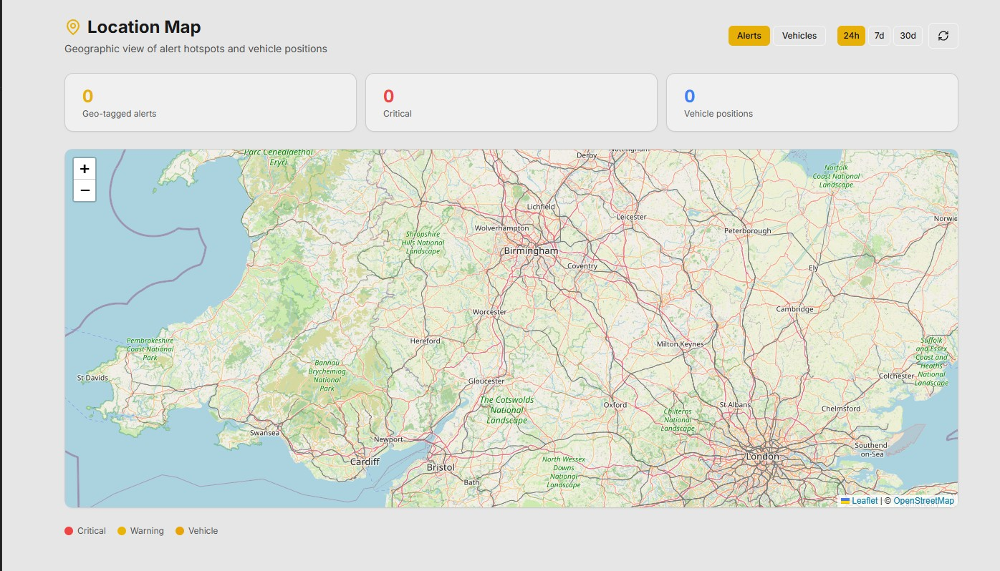
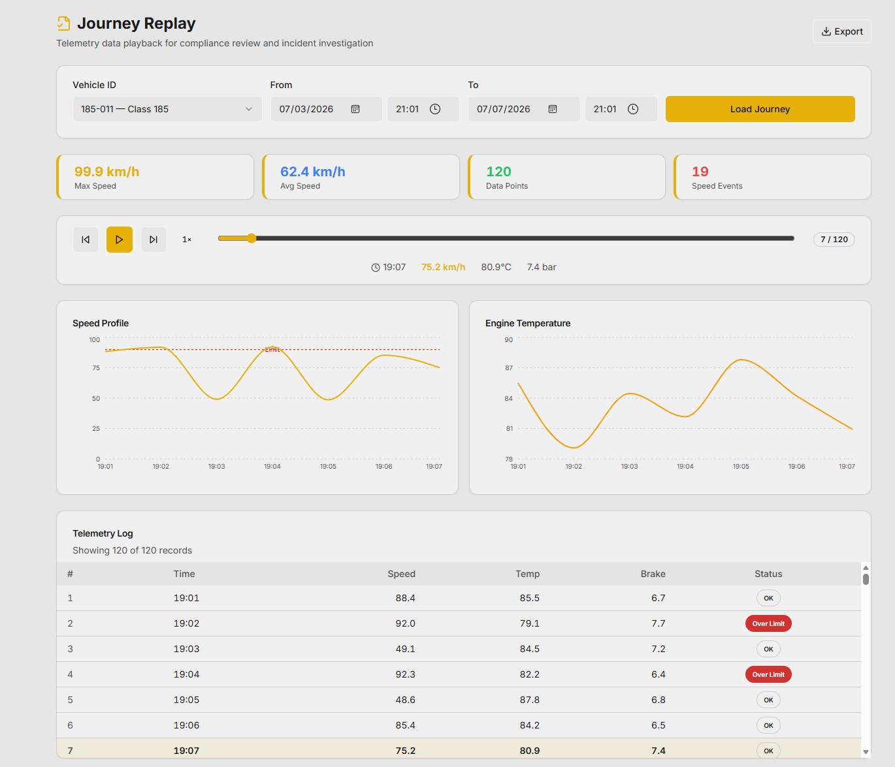
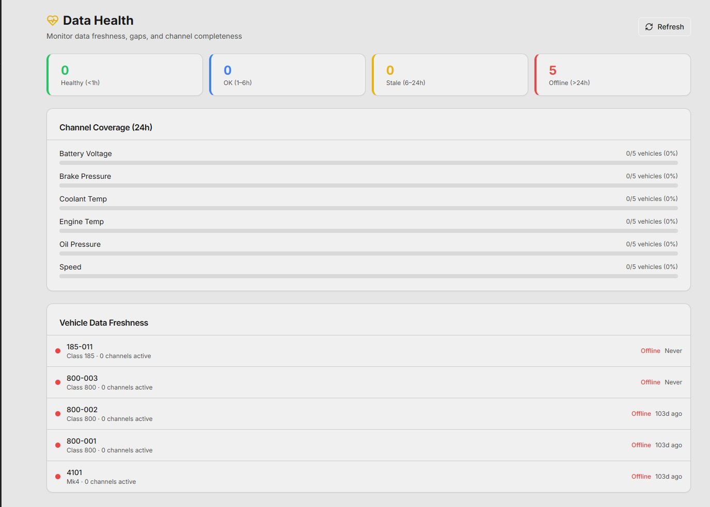
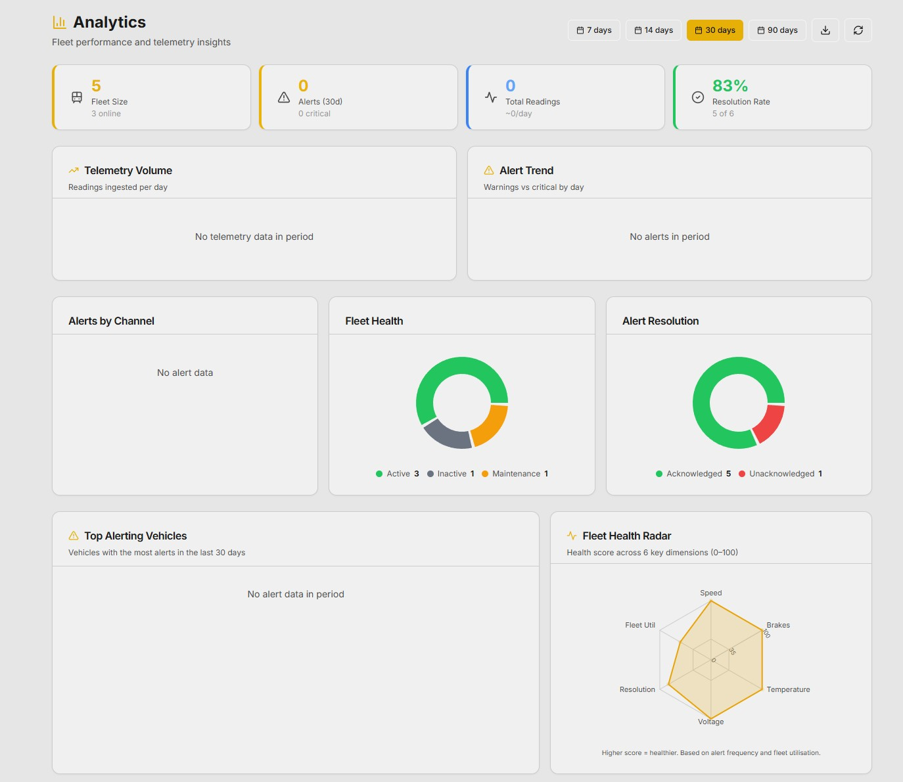

Real-Time Rail Vehicle
Telemetry Platform
Atom ingests live telemetry from across your rolling stock assets, monitors vehicle health continuously, and surfaces threshold breaches and data quality issues before they become operational problems. Built for asset owners and operators, it gives control rooms, maintenance engineers, and compliance teams a single trusted view of asset condition, in real time.


Real-time intelligence across every asset
From live fleet status to journey replay and geofenced alert mapping, Atom gives every team the visibility they need to act on fleet data with confidence.
Every asset. Every status.
In real time.
Your full rolling stock fleet displayed in real time, grouped by class and operator, with individual vehicle cards showing connectivity status, assigned alert profiles, and current alert state. No refreshing. No guessing.
- Fleet grouped by vehicle class with operator tagging (EMU, DEMU, DVT)
- Per-vehicle connectivity; Active, Inactive, or Maintenance state visible instantly
- Monitor speed, oil temp, aircon status, occupancy... any signal from any asset mapped into a live dashboard

Where every vehicle is.
Where alerts are hotspotting.
The Location Map provides a geographic view of your fleet, with current vehicle positions and alert hotspots plotted across the network in real time. Filter by alert type or vehicle positions, adjust the time window, and see where issues concentrate across your route.
- Real-time vehicle position mapping across the full rail network
- Alert hotspot overlay; Critical, Warning, and vehicle position markers
- Configurable time windows: 24h, 7-day, and 30-day views

Replay any journey.
Investigate any incident.
Full telemetry playback for any vehicle over any date range. Scrub through the speed profile, engine temperature, and all monitored channels at any moment in the journey, with speed events, Over Limit flags, and an exportable telemetry log built for compliance review and incident investigation.
- Time-stamped playback with scrubbing for any vehicle journey
- Speed profile and engine temperature charts with Over Limit event flagging
- Exportable telemetry logs for compliance, incident review, and insurance

The right view for every team
that relies on asset performance
Whether you're managing live operations, investigating a fault, or preparing a performance report..... Atom surfaces the data each team needs in the format they can act on.
Threshold alerts; configured, immediate, and clear
Define acceptable operating boundaries per vehicle class. Receive immediate notification when a reading breaches a threshold, and track each incident from open to acknowledged with full context on severity, channel, and governing profile.

Data health and channel coverage at a glance
Monitor data freshness, channel coverage, and vehicle reporting status across the fleet. Know which channels are active and where data gaps exist, before they affect your ability to detect a developing fault.

Fleet performance analytics and trend reporting
Fleet health radar, telemetry volume trends, alert counts, and resolution rate metrics across configurable periods. The analytical foundation for management reporting, performance improvement conversations, and operator briefings.
Built for asset owners and operators.
Designed for the teams that keep services running.
Atom is designed for asset owners and operators where asset availability, safety compliance, and earlier fault visibility are operational priorities, not optional improvements.
By combining real-time telemetry ingestion, configurable threshold alerting, geographic asset mapping, and full journey replay, Atom gives every team a single trusted source of asset health data. Maintenance engineers act earlier, operations teams manage alerts with full context, and compliance teams have the data they need for investigation and reporting.
This helps operators reduce unplanned failures, close data gaps between the depot and the control room, and demonstrate that asset decisions are evidence-based and defensible.